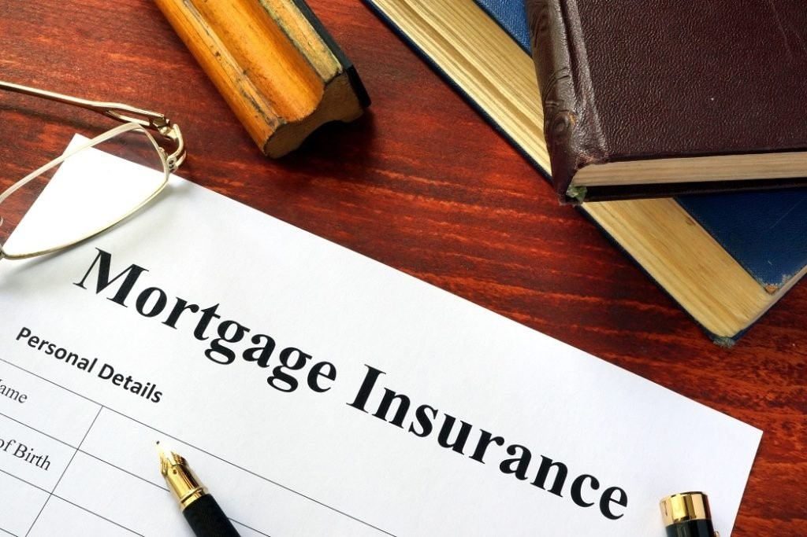

Mortgage Insurance
What is a Mortgage Insurance?
Mortgage insurance is a type of insurance that compensates the lenders of mortgage loans or bonds when the borrowers are not able to meet their obligations. It is also known as mortgage default insurance and mortgage indemnity guarantee (MIG).
Summary
- Mortgage insurance protects the lenders of mortgage loans or bonds by paying the remaining mortgage balance in the case of default.
- A borrower who makes less than 20% down payment for a conventional loan is required to purchase private mortgage insurance (PMI).
How Mortgage Insurance Works
Mortgage insurance protects mortgage lenders by compensating their losses when borrowers fail to repay in certain conditions, such as default or death, depending on the policies. The premium and coverage of mortgage insurance are determined by the value of the borrowed amount.
The premium is typically a percentage of the loan value. It is integrated into the monthly payments for the loan. The coverage of mortgage insurance falls as the mortgage does since the principal and interest are gradually repaid by the borrower.
When mortgage insurance is purchased, a master policy is issued to the beneficiary, which is a bank or another mortgage lender entity. A master policy specifies how the default should be notified when the coverage is applied or denied, and other conditions.
Private Mortgage Insurance
Private mortgage insurance (PMI) is the most common type of mortgage insurance. It is provided by private insurance companies. The policies on PMI vary in different countries.
In the U.S., a lender typically requires the home buyer to purchase PMI if the down payment is lower than 20% of the property in the case of a conventional mortgage (not backed by the federal government). It enables a borrower who cannot meet the 20% down payment to buy a house and simultaneously protects the lender from the losses of default.
If the borrower makes a down payment or holds an equity position of at least 20%, which means the loan-to-value ratio is equal to or smaller than 80%, he can ask the lender to remove PMI.
A borrower does not need to pay for PMI for the entire mortgage term. According to the U.S. Homeowners Protection Act of 1998, a borrower can request to cancel PMI when the repayment reaches the sales price or 78% of the original appraised value, whichever comes first.
PMI can be further divided into borrower-paid private mortgage insurance (BPMI) and lender-paid private mortgage insurance (LPMI). BPMI is the more common type. A lender usually charges a higher interest rate in the case of LPMI to compensate for the insurance premium.
Qualified Mortgage Insurance
The Federal Housing Administration (FHA) requires qualified mortgage insurance from its borrowers. The FHA bears high default risks, as the ones who are not qualified for a conventional mortgage loan can borrow from the FHA.
The federal agency accepts borrowers with credit scores as low as 500 and down payments as low as 3.5%. Hence, every borrower who takes an FHA mortgage must purchase qualified mortgage insurance, regardless of the value of the down payment.
Mortgage Life Insurance
Different from mortgage loan insurance, which protects lenders in the case of default, mortgage life insurance protects the heirs or the lenders when borrowers die while carrying loans.
If a borrower is concerned that his accidental death will leave a large amount of mortgage to his family, the borrower can purchase mortgage life insurance. The coverage can be paid either to the lenders or to the heirs specified in the insurance policy.